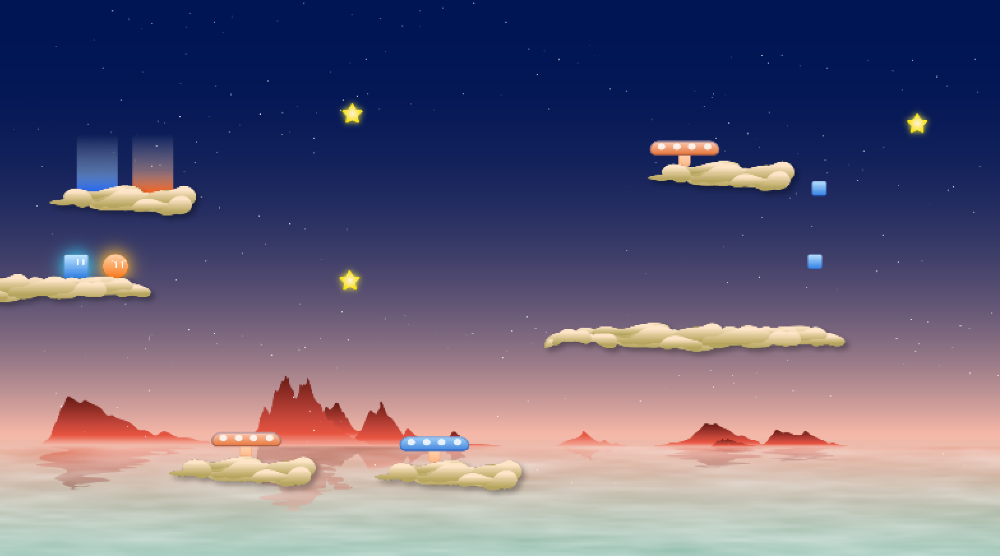
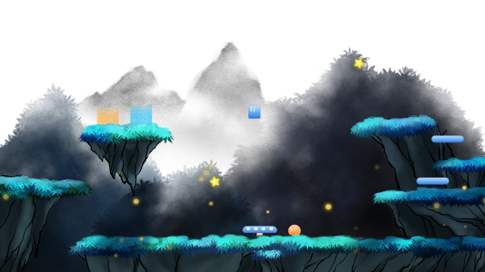
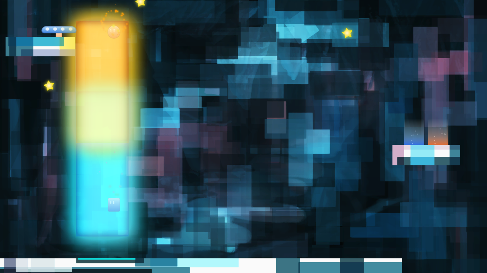
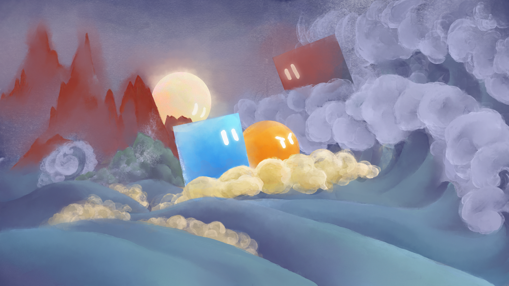

My name is Ben Yang, currently a junior at Duke University majoring in Computer Science. I design games, web/mobile interfaces and other stuff.
UI/UX Design - TechGuru
Tech-Guru.io is a computer benchmarking website that I co-founded and designed. It uses machine learning algorithms to analyze computer performance, and checks if it runs a certain game or software.
An introduction video of Tech-Guru.io that I've created with Adobe After Effects
During summer 2017, I worked as a Product Design Intern at Zhihu, a Chinese online Q&A community that serves tens of millions of users. I designed mobile and web interfaces
for more than 15 projects, including a major update of iOS and Android home page.
Game Design - Suitchi
Suitchi is a 2D puzzle platformer game that I developed with three other Duke students using Unity. I designed and programmed gameplay, 26 levels, UI and animation with C#, PhotoShop and After Effects.
Wanting to find their missing friend, Blue and Orange went on a journey filled with jumping, switching, portals and bouncy mushrooms. Shared-screen two player encouraged. Single player also welcome.

Blue and Orange each has a unique ability, but they can both teleport to each other and Suitchi positions. Use these abilities to solve 26 carefully designed puzzles that gradually
become more challenging as you figure out the endless combinations and possibilities behind Suitchi's deceivingly simple mechanics.

If you are playing with a friend, communication and collaboration are key to success. You will find yourselves constantly talking to each other and doing "one, two ,three" when
executing plans that may require careful timing. Besides solving puzzles together, you might also find pushing each other off cliffs a fun activity.

Features:
- Shared-screen collaborative puzzle solving (single player also welcome) - Simple mechanics with endless possibilities - Asian themed art and music - Rewind time if you make mistakes. No need to restart (although
you still can)

Game Design - Flip
Flip is another 2D puzzle platformer game that I developed with Unity for the 2018 ciGa Game Jam. I designed gameplay and wrote code.